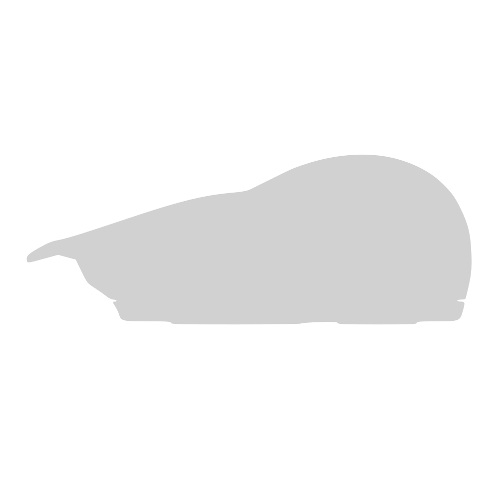

DESIGN ARROJADO
Formas e geometrias diferenciadas se destacando entre os periféricos convencionais, não vistos com facilidade.

Formas e geometrias diferenciadas se destacando entre os periféricos convencionais, não vistos com facilidade.
Texturas satisfatórias ao toque, com material emborrachado na palma da mão com padrões finamente desenhados no corpo do mouse para maior conforto.
Wellington de Lemos Vasconcelos
Seja ágil, com o mouse sem fio com o menor atraso do mercado.
Desenvolvido com polímeros biodegradáveis ultra-resistentes.